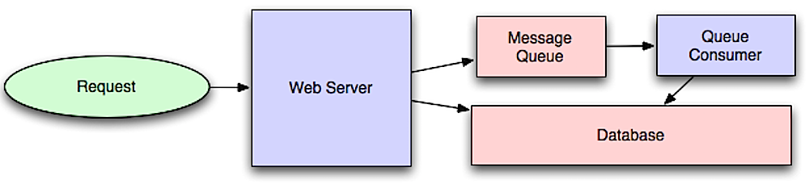

Asynchronism

Source: Intro to architecting systems for scale
Asynchronous workflows help reduce request times for expensive operations that would otherwise be performed in-line. They can also help by doing time-consuming work in advance, such as periodic aggregation of data.
Message queues
Message queues receive, hold, and deliver messages. If an operation is too slow to perform inline, you can use a message queue with the following workflow:
An application publishes a job to the queue, then notifies the user of job status
A worker picks up the job from the queue, processes it, then signals the job is complete
The user is not blocked and the job is processed in the background. During this time, the client might optionally do a small amount of processing to make it seem like the task has completed. For example, if posting a tweet, the tweet could be instantly posted to your timeline, but it could take some time before your tweet is actually delivered to all of your followers.
Redis is useful as a simple message broker but messages can be lost.
RabbitMQ is popular but requires you to adapt to the 'AMQP' protocol and manage your own nodes.
Amazon SQS is hosted but can have high latency and has the possibility of messages being delivered twice.
Task queues
Tasks queues receive tasks and their related data, runs them, then delivers their results. They can support scheduling and can be used to run computationally-intensive jobs in the background.
Celery has support for scheduling and primarily has python support.
Back pressure
If queues start to grow significantly, the queue size can become larger than memory, resulting in cache misses, disk reads, and even slower performance. Back pressure can help by limiting the queue size, thereby maintaining a high throughput rate and good response times for jobs already in the queue. Once the queue fills up, clients get a server busy or HTTP 503 status code to try again later. Clients can retry the request at a later time, perhaps with exponential backoff.
Disadvantage(s): asynchronism
Use cases such as inexpensive calculations and realtime workflows might be better suited for synchronous operations, as introducing queues can add delays and complexity.
Source(s) and further reading
It's all a numbers game
Applying back pressure when overloaded
Little's law
* What is the difference between a message queue and a task queue?